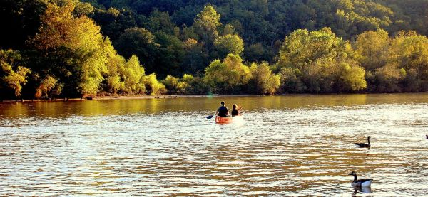

Sport DE
"Geht ihm wirklich nicht gut": Kompany kann Bayerns Torfestival nur im Sitzen verfolgen
Quelle: ntv · 17. Oktober 2026 Bild: Fuzzy Gerdes · BY 2.0
PositiveDinge
Diese Seite sammelt aktuelle Meldungen aus deutschen und englischsprachigen Quellen — und behält nur die guten. Jede Nachricht führt ihr Bild, ihre Quelle und den Link zum Original mit.
Ein Teil der Quellen berichtet ohnehin nur über gute Nachrichten. Bei den allgemeinen Nachrichtenquellen entscheidet ein Filter, und zwar bewusst umgekehrt als man zunächst denkt: Nicht das Negative wird ausgesperrt, sondern das Positive muss nachgewiesen werden. Eine reine Sperrliste ließe fast alles durch — die meisten Meldungen sind nämlich neutral, nicht offensichtlich negativ.
In drei Stufen: Zuerst fliegen Formulierungen raus, die gut klingen, aber einen Fehlschlag beschreiben („Rettung gescheitert"). Dann greift eine Sperrliste gegen Gewalt, Unglück und Katastrophen — mit einer Ausnahme für verneinte Formen, denn „ohne Verletzte" ist eine gute Nachricht. Was übrig bleibt, muss Punkte sammeln: positive Wörter im Titel zählen doppelt, negative ziehen ab.
Ehrlich gesagt: Wortlisten können nicht garantieren,
dass nie eine unpassende Meldung durchrutscht. Sie senken die
Trefferquote deutlich, mehr nicht. Deshalb protokolliert jeder Build
jede Entscheidung, und Fehlgriffe lassen sich in
config/overrides.json in Sekunden korrigieren.
Zuletzt gebaut: · 11 von 11 Quellen erreichbar
Zu diesem Thema gibt es gerade nichts.
Sport DE
Quelle: ntv · 17. Oktober 2026 Bild: Fuzzy Gerdes · BY 2.0

Tiere & Natur EN
Quelle: Good News Network · 17. Oktober 2026 Illustration

Gesellschaft DE
Quelle: Tagesschau · 17. Oktober 2026 Bild: KOMUnews · BY 2.0


Tiere & Natur DE
Quelle: ntv · 17. Oktober 2026 Bild: Floortje Walraven · BY 2.0

Sport DE
Quelle: MDR Aktuell · 17. Oktober 2026 Bild: Ken Lund · BY-SA 2.0

Gesellschaft DE
Quelle: Spiegel · 17. Oktober 2026 Bild: Carrotflower Productions International · BY-SA 2.0

Sport DE
Quelle: ntv · 17. Oktober 2026 Bild: Hopeless_Wonderer · BY-SA 2.0

Sport DE
Quelle: ntv · 17. Oktober 2026 Bild: Hopeless_Wonderer · BY-SA 2.0


Tiere & Natur DE
Quelle: SWR Aktuell · 17. Oktober 2026 Bild: jlodder · BY 2.0

Wissenschaft & Technik DE
Quelle: MDR Aktuell · 17. Oktober 2026 Bild: umseas · BY 2.0
Tiere & Natur EN
Quelle: Good News Network · 17. Oktober 2026 Illustration

Gesellschaft DE
Quelle: SWR Aktuell · 17. Oktober 2026 Bild: OakleyOriginals · BY 2.0

Gesundheit DE
Quelle: goodnews.eu · 17. Oktober 2026 Bild: TheNoxid · BY 2.0

Gesellschaft DE
Quelle: Good News Magazin · 17. Oktober 2026 Bild: Bruno_Caimi · BY 2.0
Tiere & Natur EN
Quelle: Good News Network · 16. Oktober 2026 Illustration

Gesellschaft DE
Quelle: MDR Aktuell · 16. Oktober 2026 Bild: katerha · BY 2.0

Gesellschaft DE
Quelle: SWR Aktuell · 16. Oktober 2026 Bild: Håkan Dahlström · BY 2.0

Gesellschaft EN
Quelle: Good News Network · 16. Oktober 2026 Bild: Nagarjun · BY 2.0

Gesundheit DE
Quelle: goodnews.eu · 16. Oktober 2026 Bild: TheNoxid · BY 2.0

Tiere & Natur DE
Quelle: Good News Magazin · 16. Oktober 2026 Bild: USFWS Mountain Prairie · BY 2.0
Tiere & Natur EN
Quelle: Positive News · 16. Oktober 2026 Illustration

Gesellschaft EN
Quelle: Optimist Daily · 16. Oktober 2026 Bild: 1lenore · BY 2.0
Tiere & Natur EN
Quelle: Good News Network · 15. Oktober 2026 Illustration

Gesellschaft EN
Quelle: Good News Network · 15. Oktober 2026 Illustration

Gesellschaft DE
Quelle: goodnews.eu · 15. Oktober 2026 Bild: tec_estromberg · BY 2.0

Gesellschaft EN
Quelle: Reasons to be Cheerful · 15. Oktober 2026 Bild: ell brown · BY 2.0

Kultur EN
Quelle: Positive News · 15. Oktober 2026 Illustration

Umwelt & Klima EN
Quelle: Optimist Daily · 15. Oktober 2026 Illustration

Gesellschaft DE
Quelle: goodnews.eu · 14. Oktober 2026 Bild: NASA Goddard Photo and Video · BY 2.0
Gesellschaft EN
Quelle: Reasons to be Cheerful · 14. Oktober 2026 Illustration

Tiere & Natur EN
Quelle: Positive News · 14. Oktober 2026 Bild: U.S. Geological Survey · CC0 1.0

Gesellschaft EN
Quelle: Positive News · 13. Oktober 2026 Bild: ell brown · BY 2.0

Gesellschaft DE
Quelle: goodnews.eu · 13. Oktober 2026 Bild: idlebrat · BY 2.0

Gesundheit EN
Quelle: Optimist Daily · 13. Oktober 2026 Illustration
Tiere & Natur EN
Quelle: Optimist Daily · 13. Oktober 2026 Illustration

Wissenschaft & Technik DE
Quelle: goodnews.eu · 12. Oktober 2026 Bild: UnitedSoybeanBoard · BY 2.0

Wissenschaft & Technik EN
Quelle: Positive News · 12. Oktober 2026 Bild: Kathleen Tyler Conklin · BY 2.0
Gesellschaft EN
Quelle: Reasons to be Cheerful · 12. Oktober 2026 Illustration

Gesellschaft EN
Quelle: Positive News · 9. Oktober 2026 Bild: jblyberg · BY 2.0

Gesellschaft EN
Quelle: Reasons to be Cheerful · 8. Oktober 2026 Bild: John Englart (Takver) · BY-SA 2.0